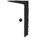
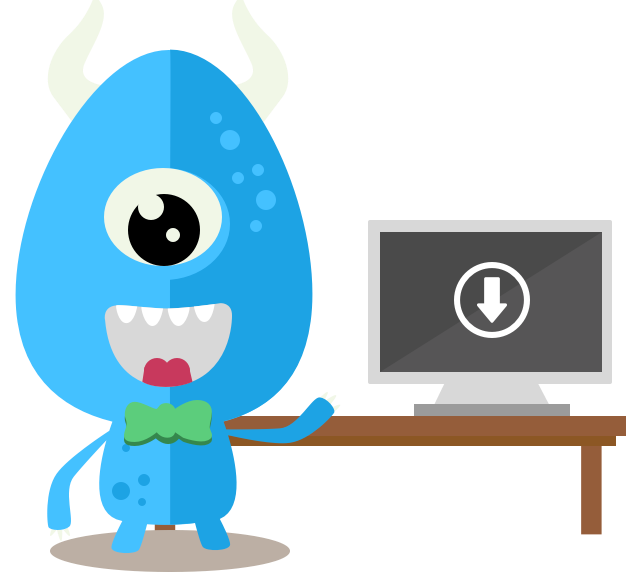

Une nouvelle aventure
Durant 4 ans nous avons accompagné des entrepreneurs dans la réalisation de leurs projets. Mais avant d'être une agence web, Smoothie a toujours eu pour ambition de lancer ses propres services. Nous avons beaucoup appris durant ces 4 années et nous sommes arrivés à la conclusion qu'il était trop compliqué pour nous d'une part de servir nos clients comme nous le souhaitions et d'autre part de donner une vraie chance aux projets que nous souhaitions lancer. Après ce constat début 2015 nous avons donc choisi de fermer la société, pour pouvoir se donner les moyens de réaliser nos propres projets. (Lire le post-mortem…)
Si vous souhaitez suivre nos aventures
- WP-Spread Blog dédié à WordPress : Actus, tutos, événements, formations…
- Next Door Projet centré sur la découverte, la curiosité et l'humain.
- Dysign.fr Site personnel de l’un des 3 fondateurs, blog entreprenarial
- Xyoos Apprendre l’informatique facilement et gratuitement sur Internet